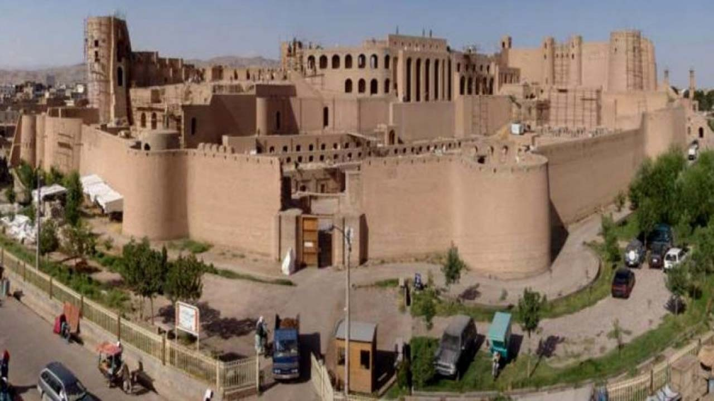
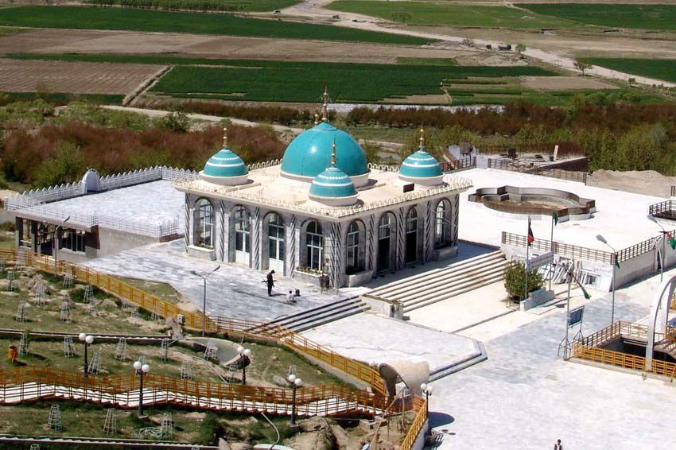
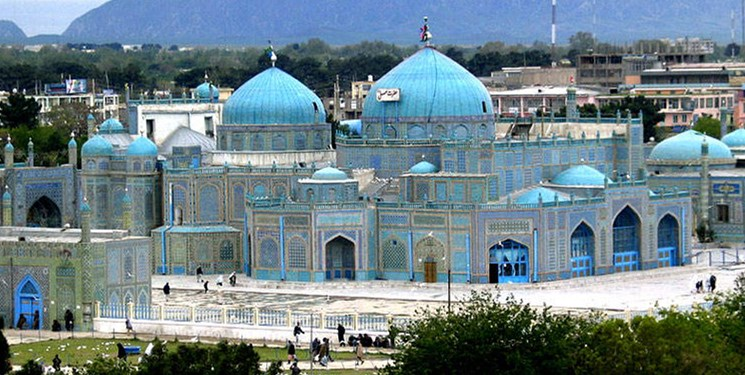

The largest cities in Afghanistan
Kabul
Kabul Province is the administrative and cultural center of Afghanistan and is known as a multi-ethnic center. The city of Kabul has a long and diverse history, showcasing a rich culture. Kabul is home to different ethnic groups from Afghanistan, which is why there are different cultures in it. Kabul is known as the center of Afghan art and music. Painting, traditional music, and local crafts such as carpet weaving and pottery are popular in the city. Persian literature holds an important place in Kabul, and many famous Afghan writers and poets are from this city. Afghan food, including pilaf, local drinks, and traditional sweets, are popular in Kabul. Traditional Afghan clothing, such as chadors, shawls, and colorful dresses, are still worn in Kabul. Kabul has a long and diverse history, with ancient monuments, historic mosques, and cultural monuments that reflect the city's history and culture.

Herat
Herat Province, Afghanistan is known as the second largest city and the industrial and cultural hub of Afghanistan. Herat has a rich history and diverse culture that is evident in its architecture, language, customs, music, and traditional arts. Herat has long been known as an important cultural, commercial, and political center in the region. The city has witnessed various governments throughout its history and has many historical monuments from the Timurid period to recent times. Herat Grand Mosque, Istiqlal Castle, and Herat Museum are among the important historical monuments of the city. The people of Herat speak Persian with the Herati dialect. In addition, some residents are also fluent in Pashto. Traditional arts of Herat include handicrafts such as carpet weaving, cloth weaving, and embroidery. Herat's local music also includes traditional instruments such as the rabab, daf, and ney. Herat is located in western Afghanistan, in one of the flattest geographical areas of the country. The Harirud River flows through the city, making its agricultural lands fertile.

Kandahar
Kandahar is an important and rich province in southern Afghanistan, with a rich culture and history. The province displays a valuable cultural heritage with its language, literature, art, religion, and traditional clothing. There are numerous historical monuments in Kandahar that reflect the region's long history, including castles, mosques, and other historical monuments. Kandahar is a historic city that has been known throughout history as an important cultural and political center. Kandahar handicrafts are also among the important economic products. Kandahar is an important agricultural region and produces a variety of agricultural products, including cumin, grapes, and other fruits. Local clothing in Kandahar is made from natural materials such as wool and linen and uses traditional colors and designs. Kandahar has a rich literary and artistic heritage, reflected in artwork, music, and local stories.

Mazar-e-sharif
Mazar-e-Sharif, the capital of Balkh Province, is known as one of the most important cultural and historical centers in Afghanistan. With a long and diverse history, this city has been a crossroads of different cultures and civilizations due to its strategic location. This city was once an important trade route between the Far East, the Middle East, the Mediterranean, and Europe. Due to its geographical location, Mazar-e-Sharif has been a place of interaction and fusion of different cultures, including Zoroastrians, Hellenists, and Muslims. Mazar-e-Sharif, with its ancient works of art and architecture, including the Great Mosque of Mazar-e-Sharif, is a symbol of the city's culture and history.
